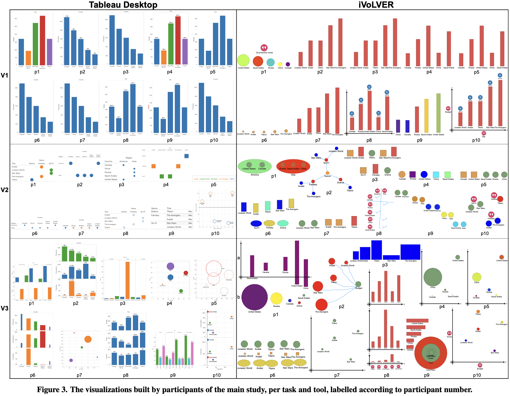
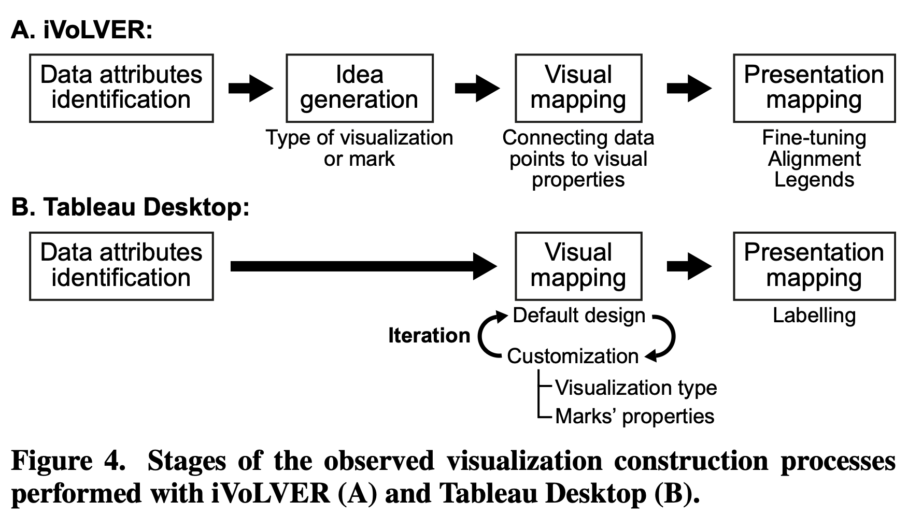
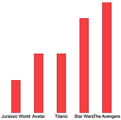

Bottom-up vs. Top-down
Trade-offs in Efficiency, Understanding,
Freedom and Creativity with AI
2025-21624 Seungwoo-Choi
Trade-offs in Efficiency, Understanding,
Freedom and Creativity with AI
Gonzalo Gabriel Méndez · Uta Hinrichs · Miguel A. Nacenta
2025-21624 Seungwoo-Choi
01 / RESEARCH QUESTION
As visualization tools become more accessible,
creating a visualization no longer belongs only to experts.
This research examines how non-experts create visualizations—
and how the tools they use shape that process.
Start with attributes and refine the visual representation.
TABLEAUAssemble individual data units into an overall visualization.
iVoLVER02 / BACKGROUND
Visualization is a process of translating data into visual form.
The direction of that process changes how people create.
This study pays particular attention to Mapping.
Decisions begin at the attribute level,
then move toward visual representation.
Individual data units are assembled incrementally
into a whole visualization.
03 / TWO TOOLS
Specify attributes and let the tool generate a visual form.
Connect visual elements and data units to construct a whole.
04 / METHODOLOGY
STUDY DESIGN
Visualization students
Two sessions · Screen recordings · Survey · Group discussion
Students, graduate students & faculty
Screen recordings · Written notes · Interviews
TWO DATASETS X THREE TASKS
V1Production by country
V2Countries and their regions (Country × Region)
V3Production, consumption & population
V1Budget by movie
V2Movies and their genres (Movie × Genre)
V3Budget, gross revenue & duration
05 / PILOT STUDY
19 of 36 enrolled students volunteered.
7 male · 4 female
Age 21–26 · median 22
Recruited from an introductory university
information visualization course.
BACKGROUNDS
Computer science · Information technology
Language & culture · Statistics
All were novices in InfoVis.
TASK STRUCTURE · PER SESSION
The dataset and equivalent task set changed between sessions.
06 / PILOT STUDY
Participants’ visualization processes were captured during the study sessions.
QUALITATIVE CODING
Codes focused on design approaches, satisfaction, rationales, useful and problematic features, and tool benefits and limitations.
At the end of Session 2, participants compared their experiences with both tools.
07 / PILOT STUDY
TABLEAU · TOP-DOWN
Participants explored more alternatives, mostly through the and trial-and-error.
iVoLVER · BOTTOM-UP
Its visualizations were more diverse and included non-standard forms.
“(I created a visualization by) dragging and dropping the attributes and Tableau did the rest and I just kept moving them around until I found one I liked.”
08 / PILOT STUDY
What characterizes and drives the overall visualization design process using the two tools?
Do top-down and bottom-up construction approaches influence
visualization design decisions and the exploration of alternative designs—and if so, how?
How do non-experts experience these two approaches in comparison?
09 / IN-DEPTH COMPARISON
3 female · 7 male
Age 20–46 · median 28
Recruited from the university
via word-of-mouth.
None had participated in the pilot.
BACKGROUND
7 undergraduate or graduate students
Computer science · Mathematics · Physics
3 professionals in related technical fields.
10 / IN-DEPTH COMPARISON
Visualization concepts → tool introduction → tasks → questionnaire and interview, repeated with the second tool.
EVIDENCE COLLECTED
Questionnaires, written observation notes, screen recordings, interview transcripts, and visualization outcomes.
415 min of video data analyzed
QUALITATIVE ANALYSIS
Two researchers coded independently, then refined the scheme through regular discussion.
Tool order was counterbalanced to reduce learning effects.
11 / IN-DEPTH COMPARISON

12 / IN-DEPTH COMPARISON

p3 · Novice in InfoVis · iVoLVER V1
“For the first design I just thought about all the general bar graphs that we see all the time in, you know, publications and stuff like that.”
Idea generation occurs before visual mapping: P3 formulated a mental model of standard publication bar charts before connecting data to marks.

13 / IN-DEPTH COMPARISON
TABLEAU · TOP-DOWN
iVoLVER · BOTTOM-UP
“I mean, I don’t really have to think about it [the design] in any way. I just put the title in one column and the value in the rows and, you know, that automatically created the bar chart, which is perfectly adequate... I didn’t necessarily have a bar chart in mind. I just wanted to put it there and decide later on how it’s best represented depending on what the program does.”
14 / IN-DEPTH COMPARISON
TABLEAU · SHELF ABSTRACTION
iVoLVER · ATOMIC CONTROL
“At one point I clicked on it, and it changed everything. I was like ‘This is a disaster!’ [...] I was just not quite sure what it was going to do once I put genre in columns. It was just very abstract.”
15 / IN-DEPTH COMPARISON
TABLEAU · Tool attribution (“Tableau did a good job”)
System delegation: participants credited the software or explicitly separated user actions from automated rendering.
iVoLVER · 1st-person pronouns (“I did”, “I mapped”)
Full personal authorship: participants experienced complete agency, crafting each mapping decision themselves.
Users act as directors requesting visual outputs: “You just throw data at the system, and it generates for you.” Cognitive investment shifts from composition to inspection.
Designing requires intimate involvement with the data. Users feel craftsman-like responsibility because every coordinate, mark size, and category boundary is shaped by their own hands.
“[In] Tableau you just throw it at the system; throw everything and then it generates for you.”
16 / IN-DEPTH COMPARISON
Tableau dominated on speed and immediate results.
Crucially, participants recognized a trade-off: Tableau for publishing where only the result matters; iVoLVER where understanding the process is paramount.
Large datasets: Tableau is the only viable option due to scalability limits of manual dragging.
Novel visual forms: iVoLVER excels when creating bespoke representations, custom groupings, or exploring unfamiliar data as you go.
Hybrid pipeline: Explore and draft visual structures freely in iVoLVER → execute cleanly at scale in Tableau.
InfoVis education: Tableau teaches taxonomies; iVoLVER lets novices “get hands dirty” to master foundational visual mapping principles.
“I did everything quicker in Tableau, even though there was less space for exploration.”
17 / RESEARCH CONTRIBUTIONS
First systematic empirical comparison of non-expert visualization construction across two opposing paradigms.
Revealing how interface affordances steer exploration, default adoption, and sense of authorship.
Theoretical reflection on the fundamental tensions in visualization tool design.
Actionable design principles for future authoring environments and InfoVis pedagogy.
18 / LIMITATIONS & FUTURE WORKS
Methodological constraints acknowledged by the researchers.
Investigated only Tableau Desktop and iVoLVER. Tool-specific UI quirks and workflow nuances may have shaped behaviors beyond the general top-down/bottom-up paradigms.
Predefined datasets and constrained tasks (V1–V3) in a 1-hour lab experiment restricted organic, self-directed data exploration typical in authentic real-world workflows.
All 10 participants possessed science/computing backgrounds with innate quantitative literacy; expanding to arts, humanities, teens, and seniors is needed.
Independent analytical critiques and overlooked dimensions.
The study deeply examined process and experience, but omitted objective visual quality metrics—evaluating whether final charts were analytically superior, accurate, or aesthetically legible.
The 3 activities were easily satisfied with standard charts; highly complex, non-standard visual forms were not strictly required, leaving iVoLVER's radical freedom partially untapped.
Because STEM participants already understood coordinate systems and data variables, the initial friction and barrier for true data novices with zero literacy remains untested.
19 / EXTENSION & FUTURE VISION
At its core, this study can ultimately be seen as comparing tools that think for us with tools that provoke thinking.
Recently, LLMs often replace human thinking rather than augmenting it—a loss of personal ownership I also felt when relying on AI to read research papers. Inspired by this study’s bottom-up paradigm, I built a tool to support understanding papers from the bottom up.